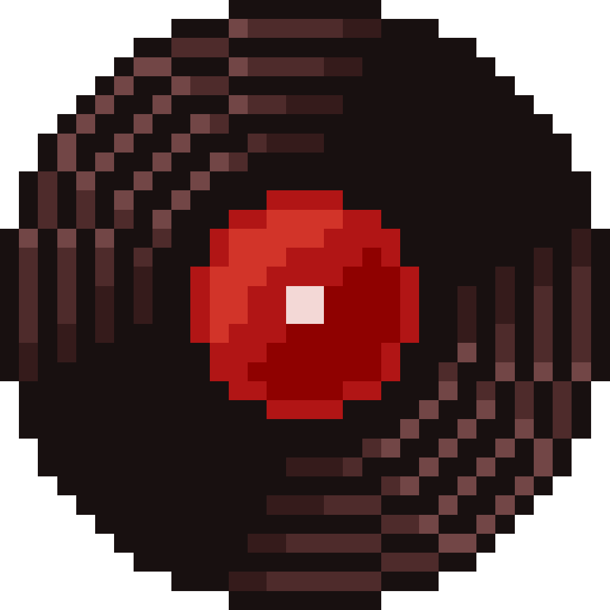
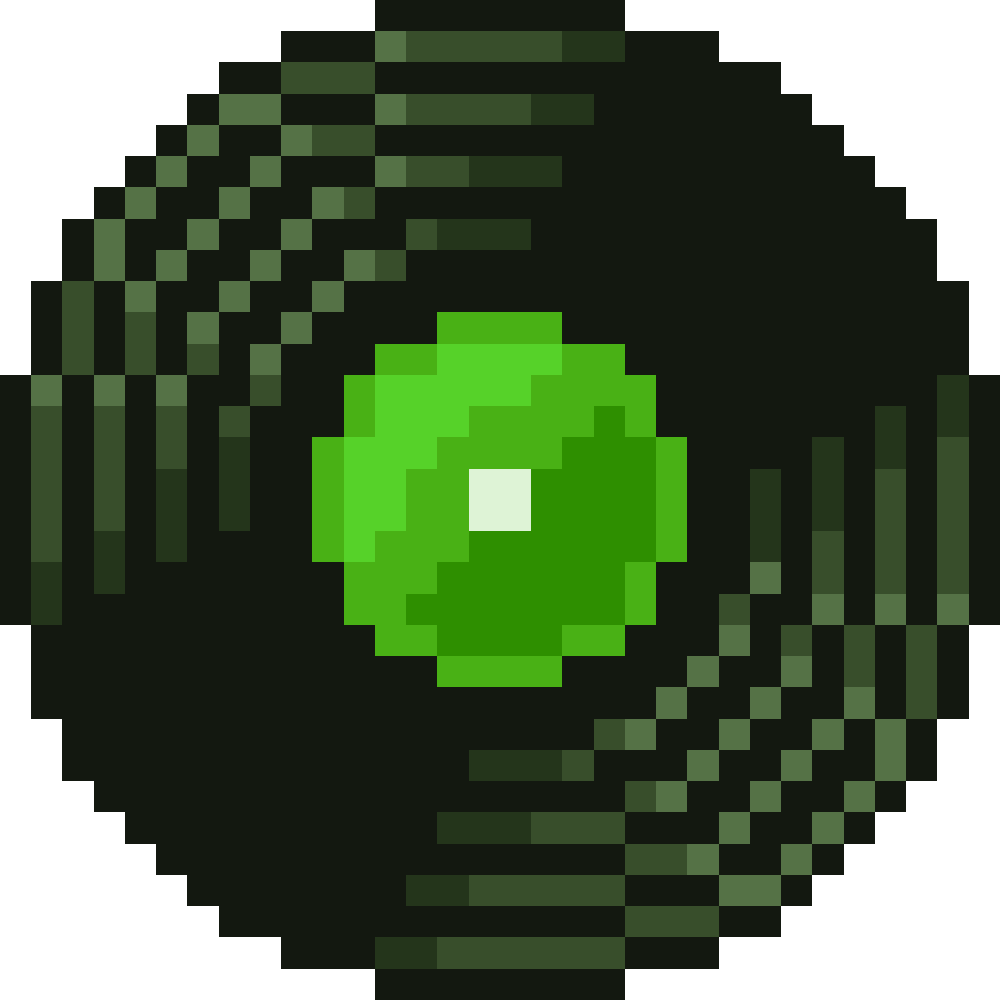
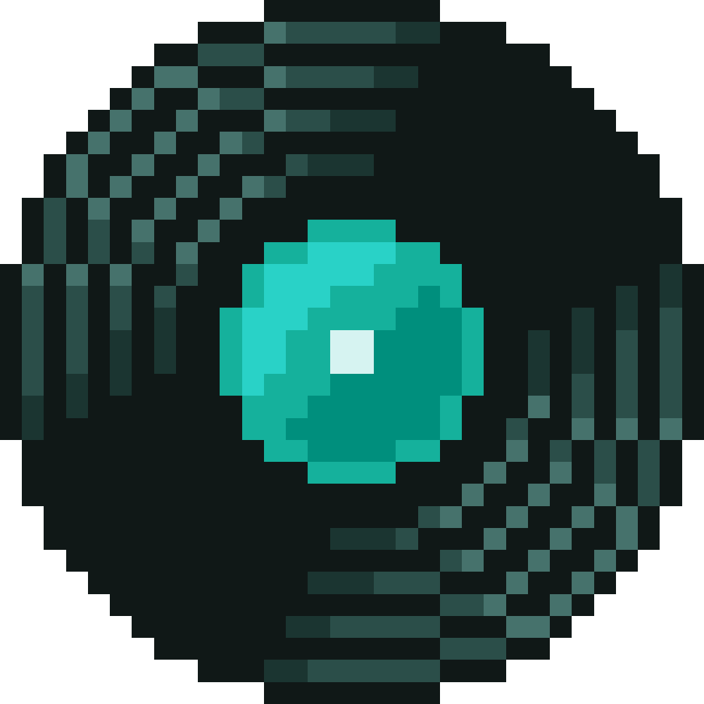
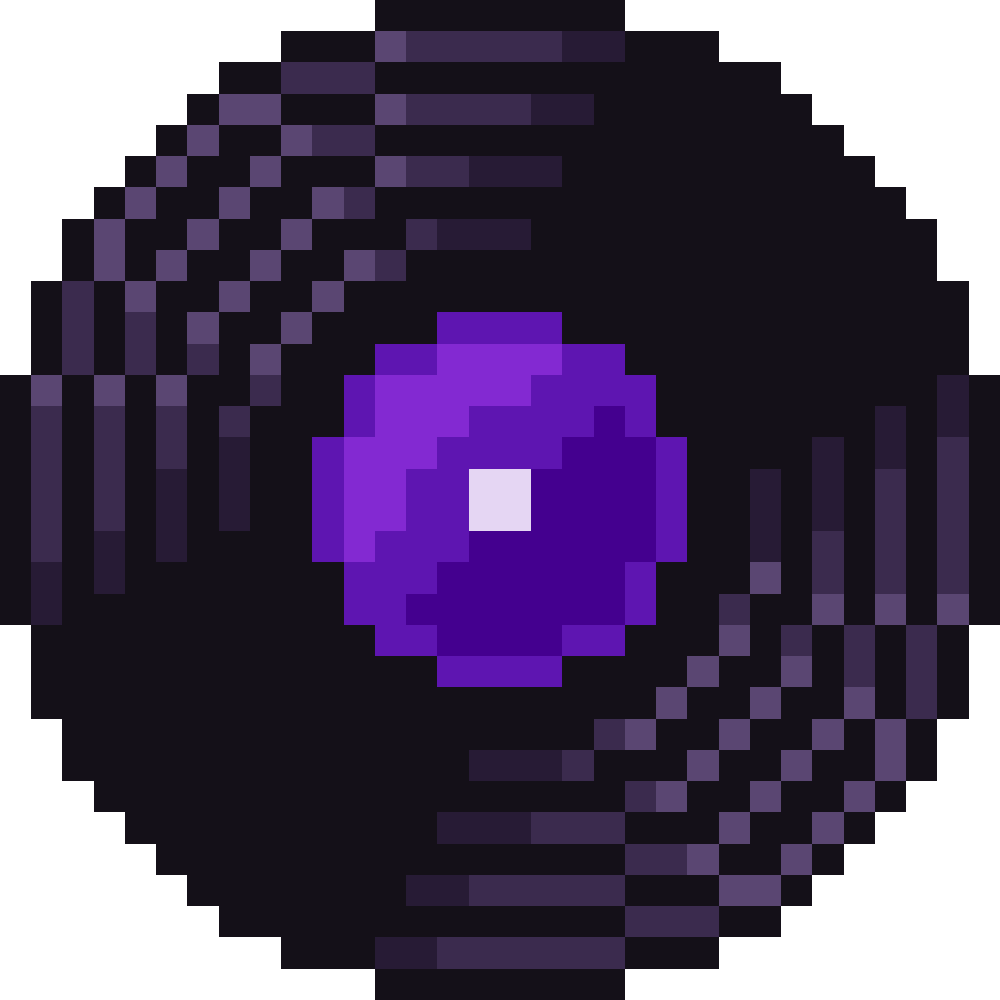
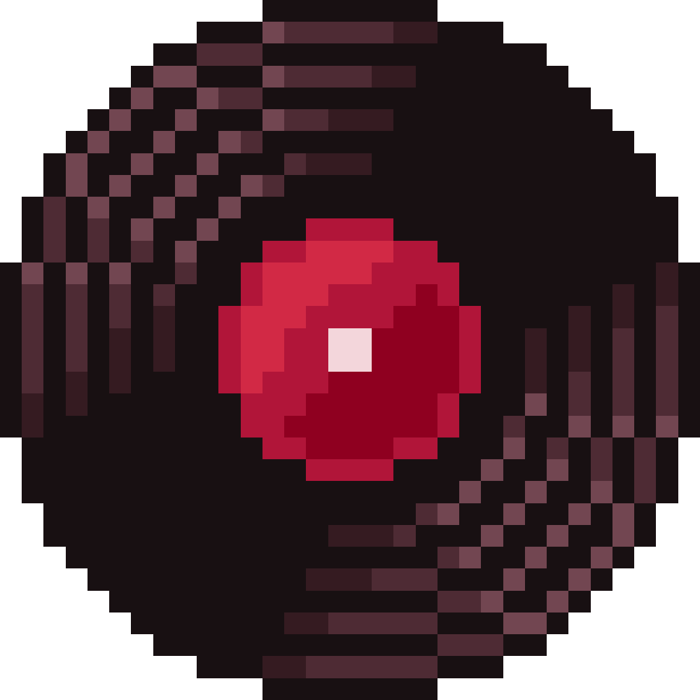

Costa de susurros
Camina por la orilla de un océano sereno, donde las olas susurran secretos antiguos y la brisa salada acaricia tu piel. Las notas relajantes de este disco te sumergen en un mar de paz y suaves olas que abrazan tus sentidos.
Noche entre Edificios
Explora el pulso tranquilo de la ciudad por la noche, cuando las luces de los edificios parpadean como estrellas urbanas. Este disco combina el murmullo lejano de la ciudad con un ritmo relajante que te invita a disfrutar de la calma urbana.
Noche de Luna Llena
Bajo la luz plateada de una luna llena, el mundo se baña en un resplandor mágico. Este disco evoca la majestuosa serenidad de una noche iluminada por la luna, llena de misterio y belleza nocturna que invita a la reflexión.
Prado de Calma
Descansa en un amplio prado donde el viento acaricia la hierba y los colores del atardecer pintan el cielo. Las melodías suaves y las brisas armoniosas de este disco te ayudarán a encontrar un momento de pura serenidad.
Fogata Bajo Estrellas
Reúnete alrededor de una fogata chisporroteante bajo un cielo estrellado infinito. Este disco recrea la calidez y la conexión de una noche al aire libre, con crujidos de madera y estrellas que susurran historias de antaño.
Bosque de Luciérnagas
Adéntrate en un bosque mágico donde las luciérnagas iluminan la noche con su danza luminosa. Este disco captura la tranquilidad y el asombro de caminar entre luces titilantes, envolviéndote en un susurro de naturaleza y misticismo.